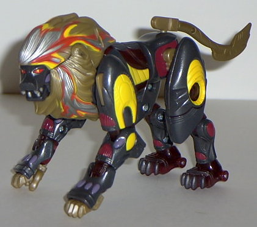
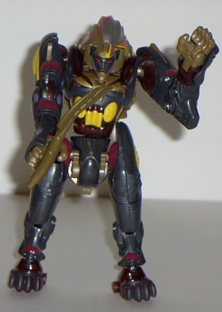

Snarl
(Universe)
Snarl
(Universe)


Allegiance
: Autobot
Size
: Deluxe
Difficulty of Transformation
: Medium
Color Scheme
: Shiny charcoal black,
flat tannish brown, yellow, transparent dark red, and some dark red, light
red, silver, and glossy purple
Rating
: 8.9
(NOTE: Because this is a repaint, this is
not a full-blown review. This mainly covers any changes made to the mold
and the color scheme, and merely compares it to Beast Machines Snarl. For
a review on the mold itself, read the review of Beast Machines Snarl
here
.)
Holy crud! Snarl looks
like he just crawled out of a flaming meteor impact crater! Back, spawn
of Unicron! Oh, wait, he's a good guy... Well, regardless, this is a really,
really, REALLY cool color scheme Snarl's decked out in this time. The black,
yellow, red, and purple work absolutely magnificently together. He's got
paint detailing practically all over his body, so there's certainly no
short of it at all. The brown also looks decent on the mane, although it
doesn't blend it quite as well with the rest of the colors. What really
captures one's attention, though, is the AWESOME "Energon radiation" on
the mane. The silver, red, and yellow streaks combine so well together!
It looks like his mane is on fire! This, coupled with the color scheme
and the slits on the eyes, actually makes Snarl look really... evil...
in lion mode, although he still looks like "a good guy" in robot mode.
No mold changes have
been made to Snarl.
Wow, what a redeco.
I'd recommend this over the Beast Machines Snarl color scheme any day of
the week- and the Beast Machines color scheme was STILL pretty good! I
can't possibly think of a better color scheme for ol' Snarl here. Buy him
noooow.
Snarl Bio
:
FUNCTION: Matrix Templar/Strategist
MOTTO: "The greater my adversary, the
sweeter the victory."
A strategic genius, cunning hunter,
and deadly warrior, Snarl is invaluable to the shared Maximal/Autobot cause.
He serves his mentor, Alpha Trion, the avatar of Primus, to further the
will of Cybertron itself. In both robot and lion forms, Snarl is an exceptionally
capable fighter, with an intellect as keen as his razor sharp claws. Has
an incredible awareness of his surroundings, almost impossible to surprise.
Through his intense training as a Matrix Templar, he has developed the
uncanny ability see into his opponent's sparks, to sense their weaknesses
and exploit them to his advantage. Has an ambush style of attack that rarely
leaves his enemies the option of survival. In his lion mode Snarl possesses
superior agility as well as lightning speed. Outfitted with special stealth
armor making him virtually undetectable to most monitoring devices. In
robot mode, his tail coverts to blade weapon. Can focus and channel his
own spark energies into powerful electrical blasts through the blade and
his claws. In the battle against Unicron's corrupting influence, he must
fight against his own predatory instincts, as his lust for battle may easily
prove his own undoing.
Strength: 4.0
Intelligence: 9.2
Speed: 9.0
Endurance: 5.2
Rank: 7.2
Courage: 9.7
Fireblast: 4.2
Skill: 8.9
Review by Beastbot
Back to Transformers:
Universe Index